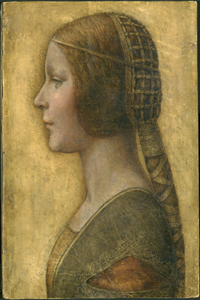
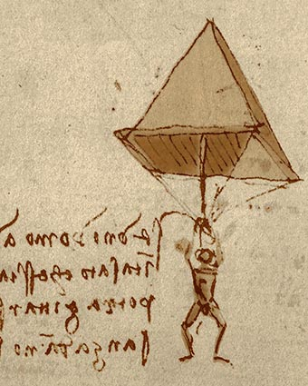
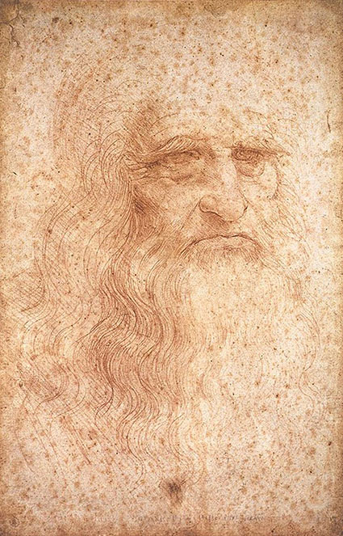

Carrossel de imagens
Clique nas setas para navegar.
Estudo de anatomia, de Leonardo da Vinci,
c.
1510.
Crédito
: REPRODUÇÃO/
COLEÇÃO REAL, LONDRES, INGLATERRA

Retrato de uma jovem noiva
, atribuído a Leonardo da Vinci, 1495.
Crédito
: COLEÇÃO PARTICULAR

Estudo de um paraquedas, de Leonardo da Vinci,
c.
1485.
Crédito
: REPRODUÇÃO/
BIBLIOTECA AMBROSIANA, MILÃO, ITÁLIA

Autorretrato, de Leonardo da Vinci,
c.
1490.
Crédito
: BIBLIOTECA REAL DE TURIM, ITÁLIA